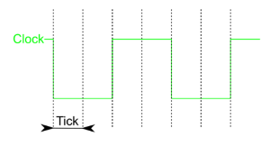

仿真菜单
- 自动传播 Ctrl-E
-
选中后，当前电路会“实时”更新：每次使用手形工具操作或更改电路时，在电路中传播的值都会更新。
如果检测到电路振荡，此菜单项会自动取消选中。
- 单步传播 Ctrl-I
-
将仿真向前推进一步。例如，某个信号可能在一步中到达某个逻辑门，但该逻辑门要到下一步才会显示相应的新输出。为了帮助识别整个电路中哪些点发生了变化，任何值发生变化的点都会用蓝色圆圈标出；如果某个子电路内部有值发生变化的点（包括更深层子电路中的变化），该子电路会以蓝色轮廓显示。
- 重新开始仿真 Ctrl-R
-
清除当前电路的全部状态，使其回到刚打开文件时的状态。如果当前查看的是某个子电路的状态，则会清除整个层次结构的状态。
- 已启用 VHDL 仿真
-
尚未记录
- 重启 VHDL 仿真器
-
尚未记录
- 退出状态
-
通过弹出菜单深入子电路的状态后，| 退出状态 |子菜单会列出当前状态上层的电路。选择其中一个即可显示对应电路的状态。
- 进入状态
-
如果曾深入子电路状态并返回上层，| 进入状态 |子菜单会列出当前电路下方可再次进入的子电路。选择其中一个即可显示对应电路的状态。
- 步进半个时钟周期 Ctrl-T
-
在单步模式下，将仿真中的时钟推进一个 tick。如果某个时钟的高电平和低电平持续时间都为 1 tick，这相当于推进半个周期。
需要手动推进时钟时，此命令很有用；当时钟不在当前查看的电路中时尤其如此。 - 步进一个时钟周期 F2
-
功能与上一项相同，但会推进两个 tick。如果某个时钟的高电平和低电平持续时间都为 1 tick，这相当于推进一个完整周期。
项目中的其他时钟会根据各自参数按比例同步推进。 - 启用自动节拍 Ctrl-K
-
开始自动推进时钟。仅当电路包含时钟组件（位于线路库中）时，此选项才会生效。该选项默认禁用。
- 自动节拍频率
-
用于选择 tick 频率。例如，8 Hz 表示每秒发生 8 个 tick。tick 是衡量时钟速度的基本单位。

示例：高电平持续时间 = 2 tick，低电平持续时间 = 2 tick，时钟频率 = tick 频率 / (2 + 2)
注意：时钟周期频率会低于 tick 频率：最快的时钟也需要 1 tick 的高电平和 1 tick 的低电平；如果 tick 频率为 8 Hz，这样的时钟频率为 4 Hz。
- 时序图
-
打开时序图模块，用于在仿真过程中自动记录和保存电路中的值。
- 测试向量...
-
测试向量窗口可通过提供电路输入和输出的测试向量文件来检查电路。
- 汇编查看器
-
汇编查看器窗口显示存储在寄存器中的地址值以及该地址处的汇编语言指令。
下一节： 窗口与帮助菜单。